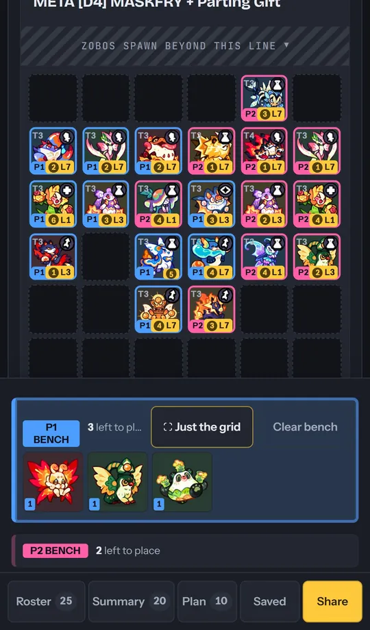
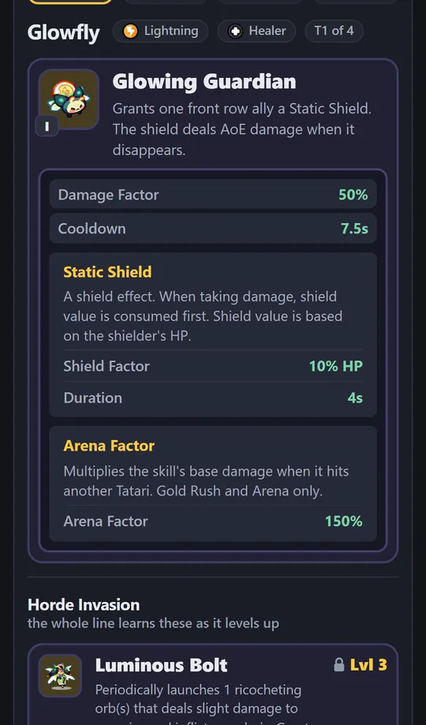

Clash of Critters
Plan your board before you spend a single resource
Horde Drafter is a free, fan-made planner for Horde Invasion, Gold Rush and Arena. Build a formation in a minute, plan it live with your co-op partner, post it to Discord as a picture, and check every skill's real numbers, read straight off the game.
1Build a formation in a minute
- Open the Drafter and pick the mode at the top: Solo, Co-op or Gold Rush. Gold Rush is the 5 × 5 field, the same one Arena uses.
- Tap Roster, tap a Tatari, then tap a square on the field. On a computer, drag it.
- Tap the chips under the field to move one you have already brought; double-tap a chip to take it off. Zobos come from the top.
- Plan lists who to level first, in order. Summary adds up every heal, buff and debuff the board brings.
- Not sure about a square yet? Turn on Flex slots and mark it "anyone's choice".
Tip: nothing to sign up for. Your formations stay in your browser until you post one.

2Co-op Horde, together and live
Horde is always co-op in the game. Plan both sides on one board, or just yours with Solo.
- Switch to Co-op. The P1 / P2 tabs above the field pick whose side you are placing.
- To plan with your partner at the same time: Formation ▾ → Live → Start a live session.
- Send them the link. You both edit the same board, and each of you sees the other's moves as they happen.
Tip: the link is all your partner needs: no account, and it works between a phone and a computer.
4Arena Factor: why skills hit softer in Gold Rush and Arena
When a skill hits another Tatari, the game multiplies its base damage by the skill's Arena Factor. It only applies in Gold Rush and Arena; against Zobos in Horde, a skill does its full damage. A skill with 200% Damage Factor and a 50% Arena Factor does 100% to an enemy Tatari.
The game shows it at the very bottom of each skill panel, where it is easy to miss. Skill data has it for every line, in the list itself.
66 lines, read off the game. The middle one keeps 50% of its skill damage against another Tatari. 41 of 66 keep half or less; only the Glowfly line hits harder (150%).
Keep the most
Keep the least
By role, DPS lines keep the least on average (43%, 26 lines) and Specialist lines the most (60%, 5 lines). A DPS that tops a Horde board can fall flat in Arena; check its factor before you bring it.
5Horde Invasion skills: Lv 3, 5 and 7
In Horde, each Tatari learns extra skills as it levels during the run. The whole evolution line learns the same three, so a T1 and its T4 share them. These are why the level-up order on Plan matters: a Lv 7 skill can carry a whole side.

Every line learns three Horde Invasion skills, at Lv 3, 5 and 7. All 66 lines are on Skill data with their numbers. The biggest single hits at Lv 7, by Damage Factor:
-
 Voltkit line
Voltkit line

 Bolt Slash · every 8–12s
600%
Bolt Slash · every 8–12s
600% -
 Tindercub line
Tindercub line

 Flame Fists · every 6–9s
580%
Flame Fists · every 6–9s
580% -
 Joeyo line
Joeyo line
 Super Launch! · every 12–18s
525% × 7
Super Launch! · every 12–18s
525% × 7 -
 Ringtail line
Ringtail line
 Cannon Ace · every 16–24s
500%
Cannon Ace · every 16–24s
500% -
 Solpear line
Solpear line
 Pear Rain · every 10–14s
500%
Pear Rain · every 10–14s
500% -
 Blowfin line
Blowfin line
 Warship Roll · every 15–21s
450%
Warship Roll · every 15–21s
450% -
 Frostnip line
Frostnip line

 Frost Path · every 11–15s
420%
Frost Path · every 11–15s
420% -
 Gibber line
Shell Burst · every 10–14s
420%
Gibber line
Shell Burst · every 10–14s
420%
Damage Factor as the game's panel writes it, per hit; "× 7" is seven hits. A slow, huge hit and a fast small one can come out even, so the cooldown is there to compare.
Also on the site
- Patch notesEvery buff and nerf, Tatari by Tatari, for every update.
- Skill dataAll 242 Tatari: Damage Factor, Cooldown, every effect, Arena Factor, and Horde skills.
- ChipsEvery chip and what it does.
- Cozy FarmThe reward tables, so you know when to stop.
- Record a rangeHelp fill in the attack ranges the wiki does not have.
Questions
Is this official?
No. It is fan-made and free, and not connected to the game's developers.
Where do the numbers come from?
Every skill number was read off the game's own skill panel, then checked by eye line by line. Skill descriptions come from the Clash of Critters wiki. Every player sees the same numbers in the game.
Do I need an account?
No. You only sign in (with Discord) to post a build to Community.
Something is wrong or missing.
Say so in the Discord, or record a missing attack range on Record a range. Patch notes are updated with every game update.